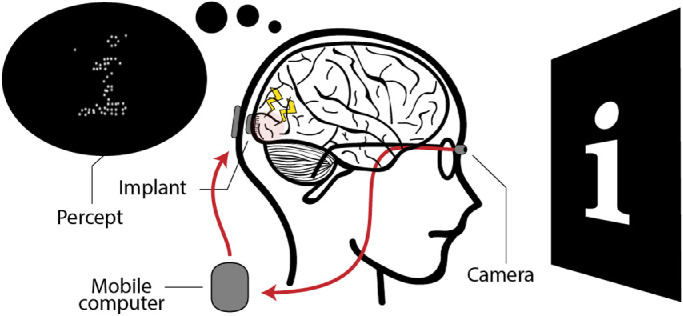

Computer vision — interactive
Before a cortical prosthesis can stimulate the brain, it has to decide what to light up. Play with the controls below to see how a computer turns a photo into information.
01Where this fits
A cortical visual prosthesis turns a camera feed into electrical stimulation of the visual cortex. This page is the first step — module M1 below — and decides which parts of the image matter.
The workshop, module by module
End-to-end overview

02Pixel-level operators
Two strategies for finding structure in an image: thresholding (pick a brightness cutoff and split light from dark) and edge detection (find where brightness changes sharply — the outline of a person, the side of a bus, the lane markings on the road). Threshold is technically not edge detection, but it lives in the same toolbox: both turn a continuous greyscale image into a sparse mask. Try each method, drag the sliders, and watch the right panel update live.
How each algorithm works — in plain words
Click a tab to read about that method. Each one answers the same question — "where does the brightness change?" — in a different way.
Look at each pixel. If it's brighter than some level, paint it white. Otherwise paint it black. That's it.
Works great when the thing you want is much darker (or much brighter) than the background — like black text on white paper. Fails when everything is similar in brightness.
- Threshold level — where to make the cut. 0 = everything white, 255 = everything black.
- Otsu — let the computer guess a good level by looking at how bright/dark the whole image is.
- Adaptive — pick a different level for each small region of the photo. Useful when lighting is uneven (one side of the image is sunny, the other is in shadow).
For every pixel, compare it to its neighbours. If the pixels to the left are dark and the pixels to the right are bright, that's an edge — Sobel marks it. It does this in two directions (left-right and up-down) and combines them.
The result is fuzzy and continuous: stronger edges look brighter. Good for a quick first look, but it lights up everything textured, including noise.
- Sobel kernel — how wide the neighbourhood is (3, 5, or 7 pixels). Bigger = smoother, but loses fine detail.
- Sobel cutoff — only keep edges stronger than this. Drag it left to see everything, right to keep only the strongest edges.
Canny is Sobel's careful older sibling. It runs the same gradient idea, then does three extra steps: (1) thin every edge down to a single-pixel line, (2) drop weak speckles, (3) connect strong edges to weaker neighbours so outlines stay continuous.
Result: clean, thin, joined-up edges. The default tool for most real pipelines.
- Low threshold — anything weaker than this is thrown away.
- High threshold — anything stronger than this is definitely an edge. Anything between low and high is kept only if it touches a strong edge. Two thresholds = the "smart connect" step.
All three methods can be told to blur the image a tiny bit first. Blurring smooths out random speckle so the algorithms don't mistake noise for edges.
- σ (sigma) — how strong the blur is. 0 = no blur, 4 = quite smudged. A light blur (σ ≈ 1) usually cleans things up nicely; too much erases real edges along with the noise.
03YOLO — finding the objects
Edge detection finds where brightness changes. It does not know what those edges are. YOLO does: it's a neural network that has been shown millions of photos and learned to recognise everyday things — people, cars, buses, dogs — and to draw a precise outline around each one.
How YOLO works — in plain words
YOLO stands for "You Only Look Once". It scans the whole image in a single pass, splits it into a grid, and for every grid cell guesses three things at the same time:
- Is there something here? (yes / no, plus a confidence score)
- What is it? (person, car, bus, bicycle, dog, …)
- Where exactly does it begin and end? (a box around it; for the segmentation version, a per-pixel mask)
Below is the output of the real YOLOv8 model run on the bus scene. Press Play to watch each object's mask appear, one by one, in the order they were detected (biggest first).
04Try it live — your camera
Now run the same techniques on your own webcam feed in real time. Click Start camera and choose between the pixel-level operators (Sobel, Canny, Threshold) or object detection (YOLO).
05Self-check
Predict the answer first, then verify with the playground above.
Q1. You raise Canny's high threshold without touching the low threshold. What happens to the edge map?
Fewer edges survive. Canny first marks pixels with gradient above the high threshold as strong edges, then traces neighbours above the low threshold. Raising the high threshold throws out borderline edges, so you keep only the most contrasted contours. Useful when the scene is noisy.
Q2. Sobel returns a magnitude image, not a binary mask. Why does that matter for stimulation?
A magnitude map says "this edge is stronger than that one", which gives the prosthesis a per-pixel intensity to drive amplitude with. A binary mask says only "edge or not", losing the gradient information. Sobel is therefore a friendlier activation-map source for amplitude modulation; Canny is better when you want sparse, well-defined contours.
Q3. The YOLO demo runs entirely in your browser. What does the model actually return for the bus photo?
A list of detections: each one has a class label (bus, person, skateboard…), a confidence score (0–1), and an axis-aligned bounding box in pixels. The page shows boxes; the underlying network also outputs class probabilities for every box it considers, plus an "objectness" score that gates whether the box is reported at all.
Q4. Webcam stream at 30 fps × Sobel = how much data per second arrives at the activation map?
At 640×480 grayscale Sobel output, 30 fps: 640 × 480 × 30 ≈ 9.2 M values/sec. Take a cortical prosthesis with, say, ~100 channels stimulating at ~300 Hz (one plausible design point — real arrays vary widely): it accepts roughly 100 × 300 = 30 K values/sec. The CV stage discards the overwhelming majority of the data before stimulation — that's why which data survives matters.
06Where to next
Next module: M2 — Gaze & DeepGaze, where the camera feed meets a model of where a person looks.
Tools & references
- tool OpenCV.js — the in-browser build of OpenCV behind the Sobel / Canny / threshold operators in §02.
- tool TensorFlow.js with the COCO-SSD model — the in-browser object detector used in §03 and the live webcam.
- paper Redmon, Divvala, Girshick & Farhadi (2016), You Only Look Once: Unified, Real-Time Object Detection. doi:10.1109/CVPR.2016.91 — the YOLO family this module borrows its framing from.
- figure de Ruyter van Steveninck et al. (2022), End-to-end optimization of prosthetic vision, Journal of Vision 22(2):20. doi:10.1167/jov.22.2.20 (CC BY 4.0) — source of the pipeline figure in §01.